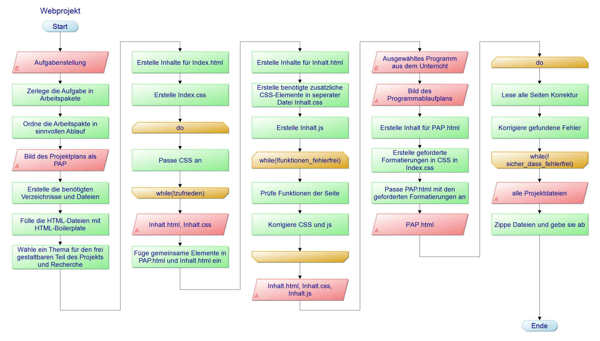

Übersicht Programmablaufplan Template Engine Pug Codebeispiel Pug
Diese Seiten entstanden im Rahmen des Unterrichts im Fach Anwendungsentwicklung der Lehrgangs FIAE14 des Berufsförderungswerks Dortmund. Es stellt ein zur Bewertung vorgelegtes Projekt dar, das aus mehreren Dateien besteht. Auf dieser Seite wird neben der Erklärung des Projekts ein Projektplan vorgestellt und die Zeitplanung im Zusammenhang mit dem Unterrichtsplan erläutert.
Im Rahmen des Projekts wurden vier Seiten erstellt und mit einem CSS‑Stylesheet formatiert. Auf dieser Seite wird das Projekt erklärt. Die Seite „Programmablaufplan“ erläutert ein ausgewähltes im Unterrichts erstelltes Programm anhand des zugehörigen Programmablaufplans. Die Seite „HTML Template Engine PUG“ stellt diese im inhaltlich und gestalterisch freien Teil des Projekts vor.
Das Erfassen der Aufgabenstellung und deren Umsetzung in eine Liste von Anforderungen stand am Anfang des Projekts. Diese wurden dann in eine geeignete Reihenfolge für einen geordneten Arbeitsablauf gebracht. Dieser wurde in folgendem Programmablaufplan festgehalten.

Abbildung 1 - Ursprünglich geplanter Projektablauf als Programmablaufplan
Vor der eigentlichen Arbeit an den Seiten werden die benötigten Verzeichnisse und Dateien angelegt. Die HTML‑Dateien wurden mit einer bereits vorliegenden Boilerplate (Grundgerüst) gefüllt. Zudem wurde für den frei gestaltbaren Teil des Projekt ein Thema ausgesucht. Die Wahl fiel auf die Template Engine Pug, die auf der Seite Inhalt.html vorgestellt werden soll. Die benötigten Informationen dafür wurden recherchiert.
Nach diesen Vorarbeiten begann die Arbeit an dieser Seite, Index.html. Sie wurde mit Inhalt gefüllt und mit CSS formatiert. Im Anschluss wurden die gemeinsamen Inhalte (Seitenkopf und Fußzeile) auch in PAP.html und Inhalt.html kopiert.
Der gleiche Ablauf wurde auch für die Datei Inhalt.html verfolgt. Abweichend von der dem Projektplan zu Grunde liegenden Planung wurde auf komplexere interaktive Elemente verzichtet. Stattdessen wurde mehr Wert auf die Vorstellung von Pug gelegt. HIER ERLÄUTERN OB CSS/JS VERWENDET ODER NICHT
PAP.html wurde als letzte der drei geforderten Seiten bearbeitet. Dies lag auch daran, dass die Auswahl des vorzustellenden Programms durch direkten Zugriff auf die Programmablaufpläne im Netzwerk des Berufsförderungswerks einfacher war. Neben der Eingabe der Inhalte musste hier noch zusätzliche Formatierung vorgenommen werden, die in der Aufgabenstellung gefordert wurden.
Im Rahmen der Arbeit an Inhalt.html reifte die Idee, den Pug-Code fü diese Seite mit Erläterungen als Beispiel für die Anwendung von Pug zu verwenden. Zu diesem Zweck wurde die Seite Pug.html angelegt. DORT WURDE WAS GEMACHT
Damit war der logische und inhaltliche Aufbau der Seiten abgeschlossen. Nach mehrfacher (und hoffentlich erfolgreicher) Überprüfung auf Fehler wurde das Projekt zur Bewertung eingereicht.
Die Aufgabe für das Webprojekt wurde am 29.11.2022 im Rahmen des Unterrichts im Fach Anwendungsentwicklung(AE) gestellt. Nach einer Erläuterung durch den Dozenten wurde der Rest der vier Unterrichtseinheiten des Tages zur Bearbeitung zur Verfügung gestellt. Am 6.12.2022 wurde der AE‑Unterrichts noch einmal zur Arbeit Projekt verwendet.
Insgesamt war ein Zeitrahmen von ca. vier Unterrichtseinheiten vorgesehen. Zusätzliche Bearbeitung der Aufgabe außerhalb der Unterrichts- und Praxisphasenzeit war möglich, aber nicht notwendigerweise vorgesehen.
Der Abgabetermin für das Projekt war der 11.12.2022, 23:59 Uhr.
| Uhrzeit | Mo | Di | Mi | Do | Fr | Sa | So |
|---|---|---|---|---|---|---|---|
| 08:00-08:45 | WGP | IT |
Praxisphase im Betrieb |
Wochenende | |||
| 08:45-09:30 | |||||||
| 09:30-09:50 | Kaffeepause | ||||||
| 09:50-10:35 | SGL | Jour fixe | |||||
| 10:35-11:20 | Englisch | AE | |||||
| 11:20-11:30 | Kurze Pause | ||||||
| 11:30-12:15 | Englisch | AE | |||||
| 12:15-13:15 | Mittagspause | ||||||
| 13:15-14:00 | WiSo | AE | |||||
| 14:00-14:45 | |||||||
| 14:45-15:00 | Kaffeepause | ||||||
| 15:00-15:45 | KT | IT | |||||
| 15:45-16:30 | |||||||
Tabelle 1 - Aktueller Stundenplan des Lehrgangs FIAE14
Für diese Seiten wurde die Zeit am 29.11. genutzt. Zudem wurde am 5.12. der Text und der Programmablaufplan für die Seite PAP.html eingefügt, da an diesem Tag Präsenzunterricht im Berufsförderungswerk stattfand und dort einfacher Zugriff auf die benötigten Dateien möglich war.
© 2022 Johannes Knieling